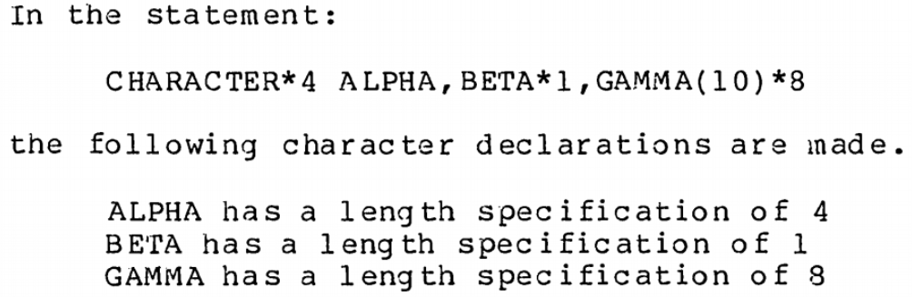

Maintaining Fortran in Python in Perpetuity
Rohit Goswami .and. Melissa Mendonca .and. Ralf Gommers .and. Thirumalai Shaktivel .and. Pearu Peterson
Created: 2022-07-15 Fri 12:39
Brief Introduction
Hello!
- Find me here: https://rgoswami.me
- Who?
- Rohit Goswami MInstP
- Doctoral Researcher, Science Institute, University of Iceland
- Software Engineer, Quansight Labs, Austin TX
- Rohit Goswami MInstP


Logistics
- All contents are hosted on GitHub
- Slides are in
presentations/scipy22/F2PYmaint
- Slides are in
Programming Languages
Motivation
“If a program or package (the words are used interchangeably) is to have a long life and to be of wide application in its field, it is essential for it to be easily moved from one machine to another.
It used to be common to dismiss such movement with the statement, ‘There is no such thing as a machine-independent program.’
Nonetheless, a great many packages do now move from one machine to another”lyonUsingAnsFortran1980
–> Through the magic of automated coding and standards
Language Standards
“The standard is the contract between the compiler writer and the application developer.”clermanModernFortranStyle2012

Changing Standards
character(10) BLAH*8 character*8 :: BLAH_ONE(10) character(8) :: BLAH_ONE(10)
#!/usr/bin/env python print("Hello World") print "Hello World"

Fortran, C, Python
- F2003
- Introduced the
ISO_C_BINDING - F2008
C_PTRforvoid *and more- F2018
- Brought interop for exotic Fortran features which via
C descriptors - Interop
- Described in great detail on fortran90.org:

F2PY
History
- Developed by Pearu Peterson petersonF2PYToolConnecting2009
- July 9, 1999
f2py.py–> Fortran to Python Interface Generator (FPIG)- January 22, 2000
f2py2e–> Fortran to Python Interface Generator, 2nd edition.- July 19, 2007
numpy.f2py–> f2py2e moved to NumPy project. This is current stable code of f2py.
- Used extensively for F77
Design

- A best effort wrapper
- Specifications via
.pyfor inline comments - Not a compiler
- Can rewrite code :)
- Specifications via
Explorations in F77
Fibonacci
C FILE: FIB1.F SUBROUTINE FIB(A,N) C CALCULATE FIRST N FIBONACCI NUMBERS INTEGER N REAL*8 A(N) DO I=1,N IF (I.EQ.1) THEN A(I) = 0.0D0 ELSEIF (I.EQ.2) THEN A(I) = 1.0D0 ELSE A(I) = A(I-1) + A(I-2) ENDIF ENDDO END C END FILE FIB1.F
f2py -m fib -c fib1.f python -c "import fib; import numpy as np; a=np.zeros(7); fib.fib(a); print(a); exit();"
Up the magician’s sleeve
- Generated files
mkdir blah f2py -m fib -c fib1.f --build-dir blah tree blah blah ├── blah │ └── src.macosx-10.9-x86_64-3.9 │ ├── blah │ │ └── src.macosx-10.9-x86_64-3.9 │ │ ├── fortranobject.o │ │ └── fortranobject.o.d │ ├── fibmodule.o │ └── fibmodule.o.d ├── fib1.o └── src.macosx-10.9-x86_64-3.9 ├── blah │ └── src.macosx-10.9-x86_64-3.9 │ ├── fortranobject.c │ └── fortranobject.h └── fibmodule.c 7 directories, 8 files
Complexity
wc -l fortranobject.c fortranobject.h fibmodule.c
1107 fortranobject.c
132 fortranobject.h
372 fibmodule.c
1611 total
- NumPy Distutils
from numpy.distutils.core import Extension, setup fibby = Extension(name = 'fib', sources = ['fib1.f']) if __name__ == "__main__": setup(name = 'fib', ext_modules = [ fibby ])
Which can then be built simply with:
python setup.py build ag -g .so # build/lib.macosx-10.9-x86_64-3.9/fib.cpython-39-darwin.so
- Not fun for non
pythonprojects
- Not fun for non
(Some) Planned Features
Meson and f2py
project('test_builds', 'c', version : '0.1') add_languages('fortran') py_mod = import('python') py3 = py_mod.find_installation() py3_dep = py3.dependency() incnp = run_command(py3, ['-c', 'import os; os.chdir(".."); import numpy; print(numpy.get_include())'], check : true ).stdout().strip()
inc_np = include_directories(incnp) py3.extension_module('fib1', 'fib1.f', 'fib1module.c', 'fortranobject.c', include_directories: inc_np, dependencies : py3_dep, install : true)
Command Line Interface
- The F2PY UX is rather distinctive
-cflag acts as a compiler / build-tool- Otherwise works to generate
C wrappersand Signature files
- Rewrite ongoing [GSoC]
- Supports Namami Shankar
argparsebased design

Derived Types
- Soon to be a NEP : https://github.com/HaoZeke/f2py_derived_nep
- Tested by
cmocka - e.g.
bind(c)types map to classes
meson setup bbdir meson compile -C bbdir python -c "import bbdir.pycart as pycart; aak = pycart.pycart(1,10,2); print(aak); aak.unitstep(); print(aak)" pycart(x: 1.000000, y: 10.000000, z: 2.000000) Modifying derived type pycart(x: 2.000000, y: 11.000000, z: 3.000000)
Moving beyond bind(c)
- Generate Fortran wrappers to manipulate types
- All allocations handled in Fortran
- Python only calls wrappers to aforementioned types
Logical restructure
- Current flat hierarchy –> intimidating
- Don’t need much Fortran for front-end work
- codegen
- Creates wrappers
- csrcs
fortranobject.{c,h}for builds
- frontend
- Parser, type inference
- stds
- Includes f77, f90, and pyf specs
- utils
- For testing and more
- tests
- For sanity
- (no term)
- WIP : https://github.com/numpy/numpy/pull/20481
Maintenance
Concepts
- Fortran 202X standard
- 668 pages
- Python-C API description
- 320 pages
- NumPy-C API description
- 103 pages
- C++ 2020 (N4849) standard
- 1815 pages
- C11 (N1570) standard
- 701 pages
Test isolation
- Write a test for each bug
- Typically already in the issue!
class TestNegativeBounds(util.F2PyTest): # Check that negative bounds work correctly sources = [util.getpath("tests", "src", "negative_bounds", "issue_20853.f90")] @pytest.mark.slow def test_negbound(self): xvec = np.arange(12) xlow = -6 xhigh = 4 # Calculate the upper bound, # Keeping the 1 index in mind def ubound(xl, xh): return xh - xl + 1 rval = self.module.foo(is_=xlow, ie_=xhigh, arr=xvec[:ubound(xlow, xhigh)]) expval = np.arange(11, dtype = np.float32) assert np.allclose(rval, expval)
Front-end
- Covers (parser, code-gen)
pdband editable installs are good choices- Tough otherwise (
globalvariables)
- Tough otherwise (
micromamba create -f environment.yml micromamba activate numpy-dev pip install -e . # EDITABLE MODE # Add a breakpoint anywhere breakpoint() # Profit f2py -m blah buggy.f90
- e.g. https://github.com/numpy/numpy/pull/21256/files –> Negative bounds
Back-end
- Covers (C wrappers, code-gen)
gdbworks well- Sometimes with CPython extensions (see the sprint)
- Manipulate the generated
Ccode- Then move back to code-gen in Python
- e.g. https://github.com/numpy/numpy/pull/21807/files –> Respect
value
Supporting value attributes
- Fortran 2003 supports call-by-value
f2pywrappers pass by reference
- Details here
- Very well reported issue
Verify Bug
# Make wrappers f2py -m foo blah.f90 meson bbdir meson compile -C bbdir cd bbdir python -c "import foo; print( foo.fortfuncs.square(3) );" 170676880
static PyObject *f2py_rout_foo_fortfuncs_square( const PyObject *capi_self, PyObject *capi_args, PyObject *capi_keywds, void (*f2py_func)(int*,int*)) { (*f2py_func)(&x,&y); // Passed by reference!
Fixup C wrapper
# Make wrappers meson compile -C bbdir cd bbdir python -c "import foo; print( foo.fortfuncs.square(3) );" 9
static PyObject *f2py_rout_foo_fortfuncs_square( const PyObject *capi_self, PyObject *capi_args, PyObject *capi_keywds, void (*f2py_func)(int,int*)) { (*f2py_func)(x,&y);
Modify Parser
valueshould be recognized bycrackfortran- Add a
breakpointand stare
- Add a
name_match = re.compile(r'[A-Za-z][\w$]*').match breakpoint() for v in list(vars.keys()): >>> c # till fortfuncs is processed >>> pp vars {'x': {'attrspec': ['intent(in)', 'value'], 'typespec': 'integer'}, 'y': {'attrspec': ['intent(out)'], 'typespec': 'integer'}}
- So it is already recognized..
Augment aux functions
- Handle the attribute within
aux.py- Also conditionally modify signatures + call conventions
def isattr_value(var): return 'value' in var.get('attrspec', []) def getcallprotoargument(rout, cb_map={}): ... if not isattr_value(var): ctype = ctype + '*'
Generate wrappers
- This is similar to the handling of the existing
intent(c)- In
rules.py
- In
'callfortran': {l_or(isintent_c, isattr_value): '#varname#,', l_not(l_or(isintent_c, isattr_value)): '&#varname#,'},
Final tasks
- Add a test
- Solicit reviews
- Ask about a release note
- Profit!
Conclusions
Road-map
- Updating the test suite, using
cmocka - Rewriting the C wrappers for newer standards
- Build tool support [Namami Shankar]
np.distutilsis going the way of the dodo
- Implementing newer standards (90, 95, 2003, 2008, 2018, 2020Y)
- Automating guarantees
- Documentation and more interop with NumPy-C
crackfortranworks via dictionaries and strings..- Perhaps a more abstract semantic representation…
- Or concepts from G3 F2PY [Pearu]
- Handle parallelism (proposed)
do concurrentandufuncs
Why does Fortran stay in Python anyway?
To write efficient wrappers without being a language lawyer
How does Fortran stay in Python anyway?
With all your help (Issues, users, developers, non-code contribs)
The End
Acknowledgments

- Prof. Hannes Jónsson as my supervisor, Prof. Birgir Hrafnkelsson as my co-supervisor
- Dr. Ondřej Čertík at GSI Tech.
- Quansight Labs (Dr. Ralf Gommers, Dr. Melissa Weber Mendonça and Dr. Pearu Peterson)
- NumPy Team (Matti, Ross, Sebastian, Chuck, Inessa, etc.)
- Family, pets, Groupmembers, audience